I am a student at Boston College pursuing a degree in Computer Science and Studio Art. I have a passion for both software development and art, and I enjoy combining these skills in my projects.
Outside of my academic pursuits, I enjoy playing video games, creating art, playing volleyball, and watching sports. I am always looking for new opportunities to learn and grow as a developer and artist.
I am currently working on a poker game. The project is in its early stages and has focused mainly on art and design so far.
After completing the standard poker features, I plan to include power-ups and boosts to explore probability-based mechanics.
This website is temporary as I continue learning React and building a more complex portfolio.
My recent focus has been digital art and painting. Most of my portfolio consists of digital paintings and illustrations, with plans to explore animation in the future.


 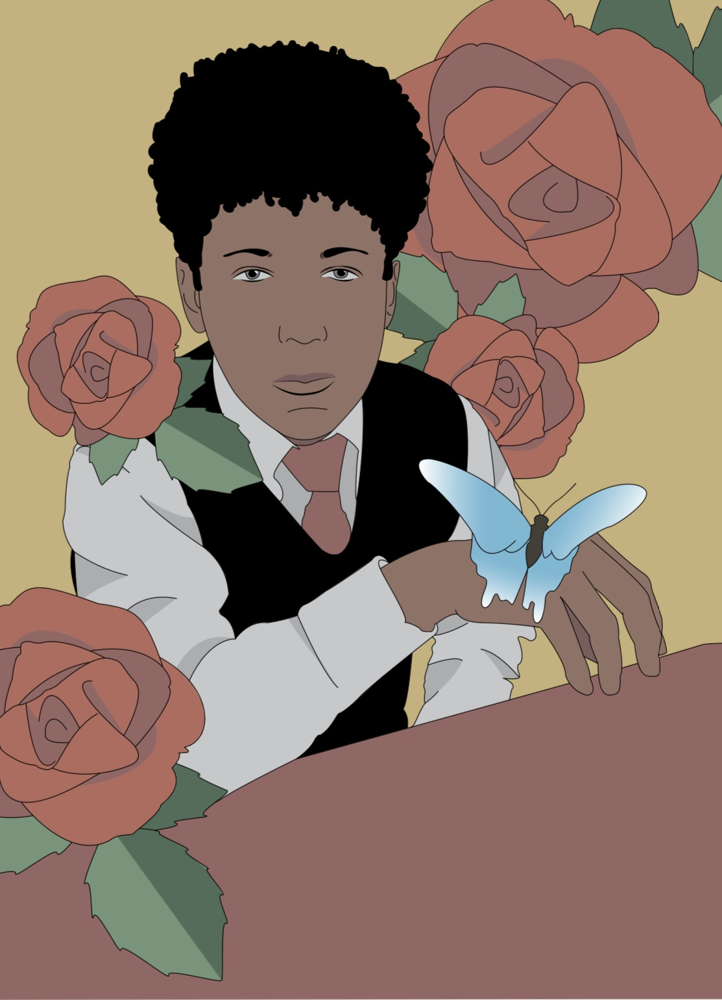
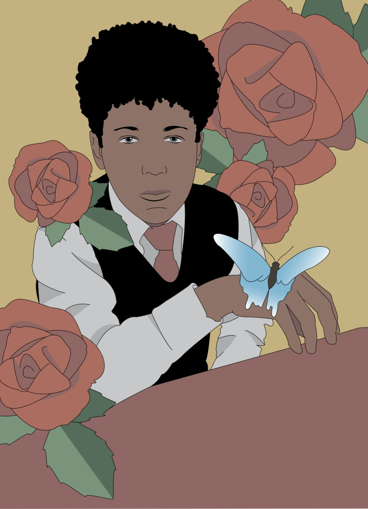
 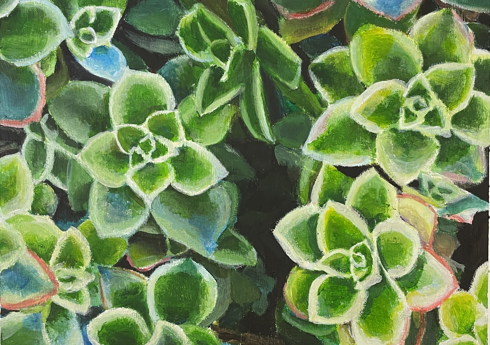
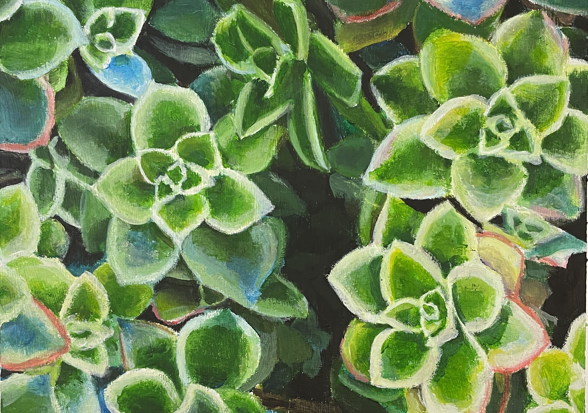
 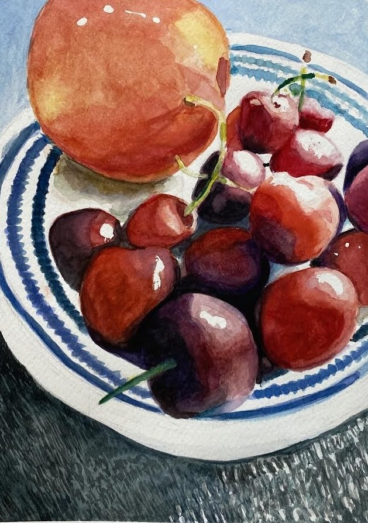
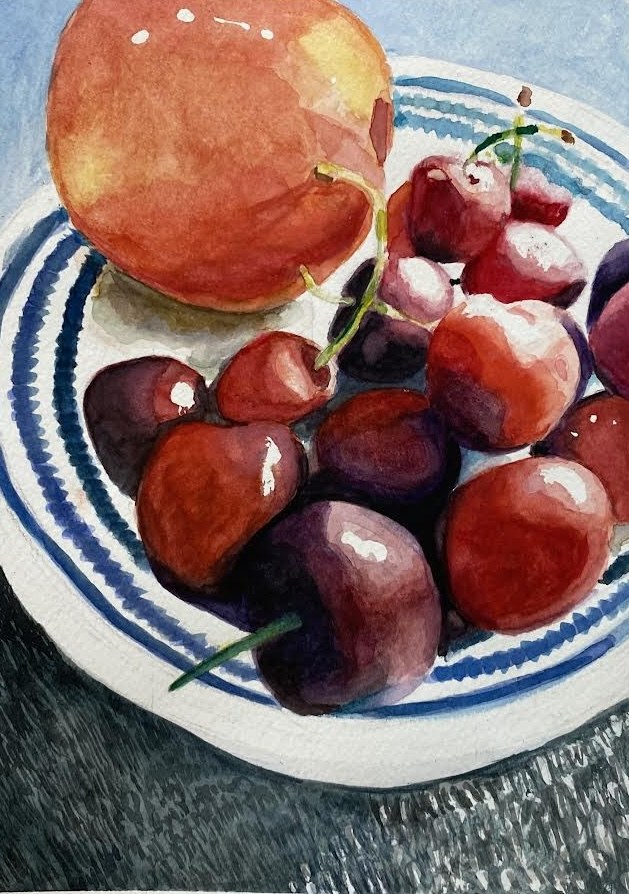
 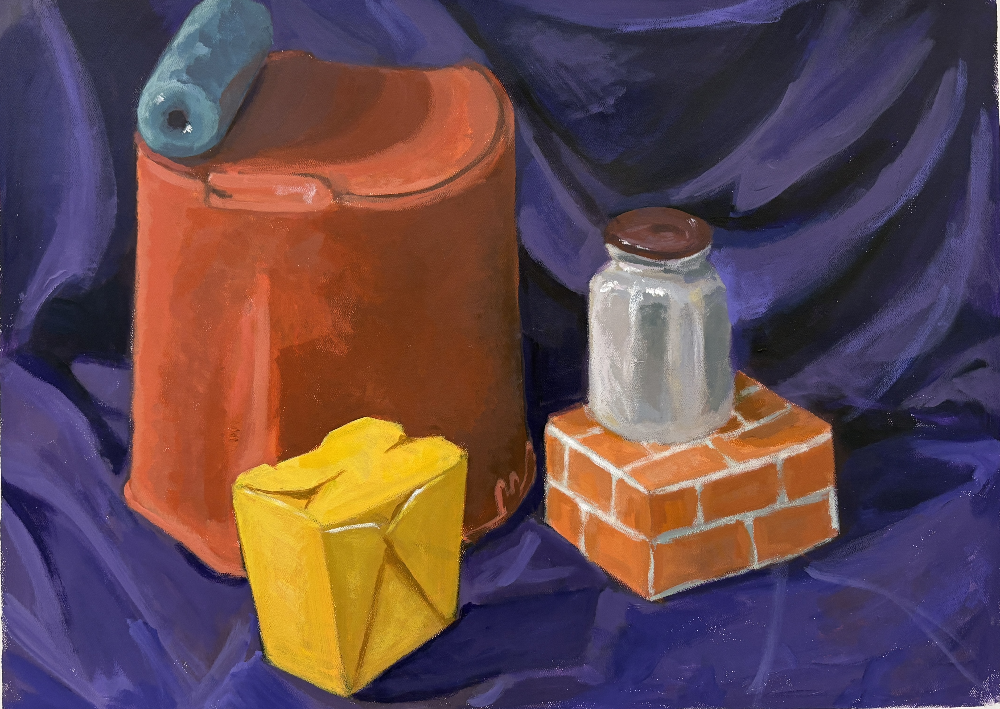
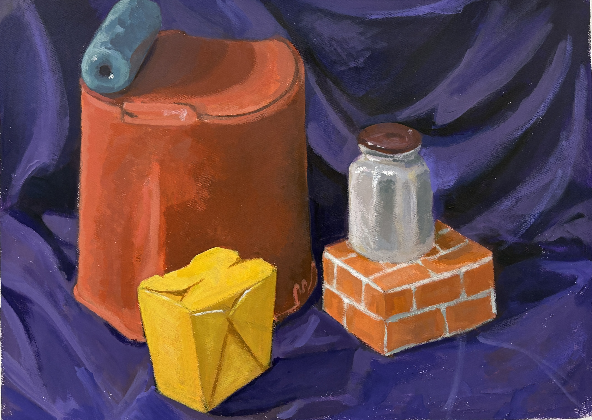
 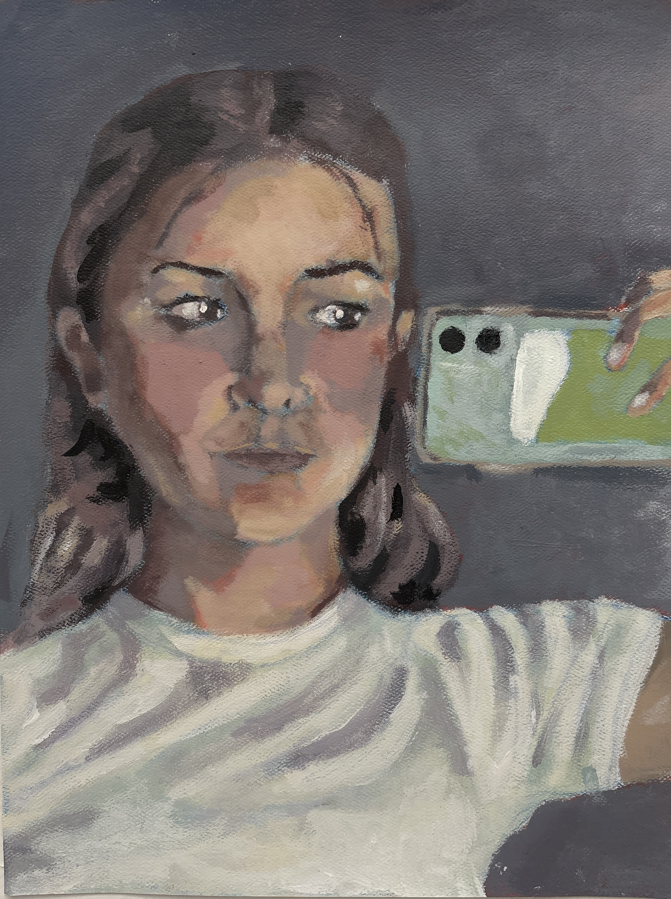
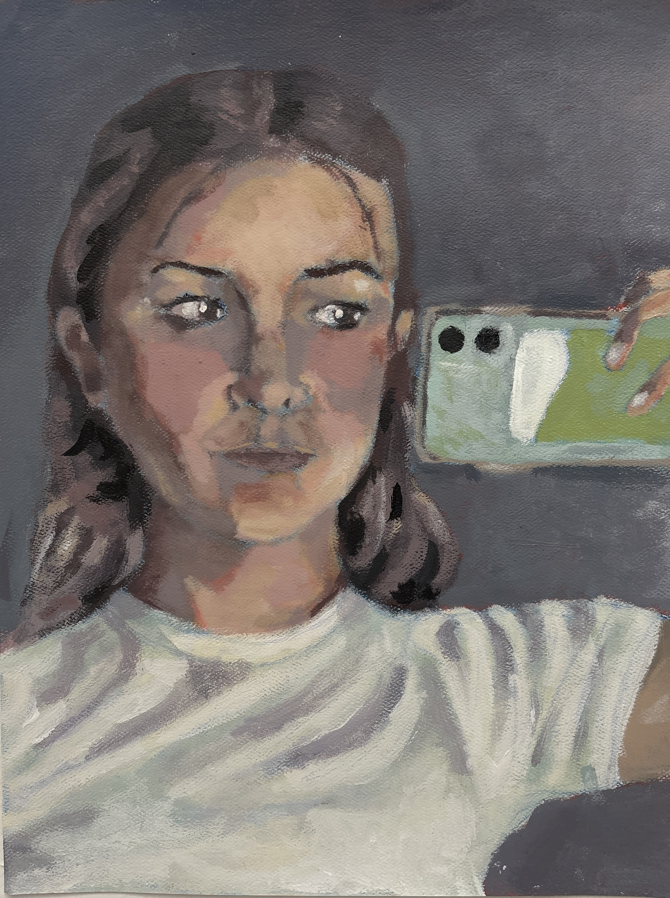
 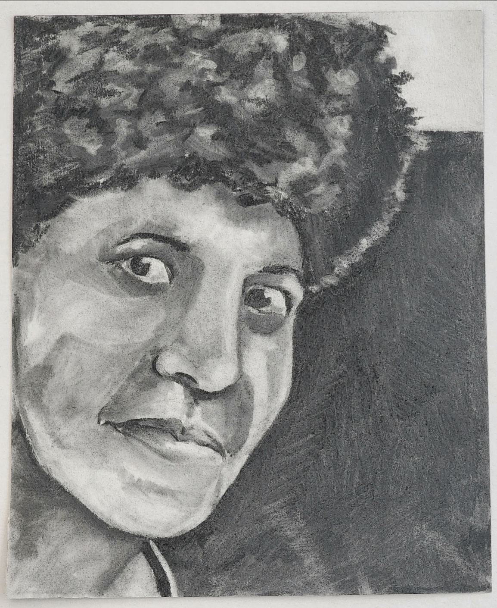
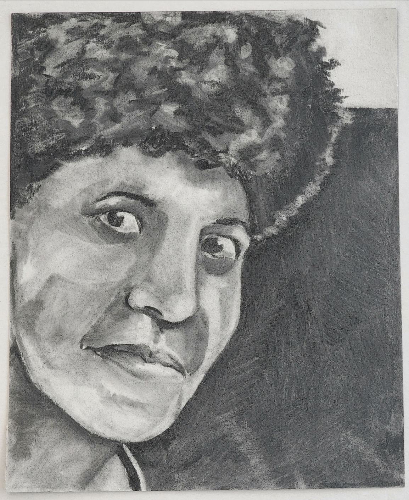